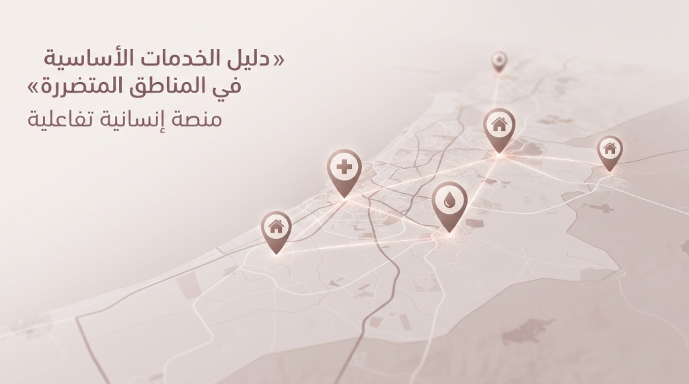

نظرة عامة على المشروع
مبادرة إنسانية شخصية نُفذت في ظل ظروف الأزمات والحروب (2024-2025) لسد فجوة الوصول إلى المعلومات الحيوية في المناطق المتأثرة. تم بناء المنصة كتطبيق ويب خفيف وسريع التحميل يتيح التصفية الفورية للخدمات الحيوية المصنفة إلى مستشفيات وعيادات، ومراكز إغاثة ومساعدات، ونقاط توزيع مياه صالحة للشرب. تتضمن المنصة شريط بحث فوري، وخريطة تفاعلية موجهة بنقاط الإحداثيات، وتفاصيل أوقات العمل والسعة الاستيعابية وزر الاتجاهات. ملاحظة: تم تطوير ونشر المشروع كنموذج أولي وظيفي تفاعلي يجسد توظيف التكنولوجيا في الاستجابة الإنسانية؛ وتتضمن البيانات سجلات ونقاط تجريبية لغرض المحاكاة.
التحدي الإداري والتقني
في أوقات النزاعات والأزمات، يؤدي انهيار البنية التحتية وتشتت المعلومات إلى صعوبة بالغة وخطورة حقيقية في معرفة أماكن المستشفيات الفعالة، ومراكز توزيع الإغاثة، ونقاط المياه النقية.
الحل وهندسة النظم
تصميم واجهة ويب سريعة وخفيفة تستهلك أدنى حد من حزم البيانات، توفر تصنيفاً واضحاً للخدمات، ومفتاح خريطة ملوناً، وإرشادات واضحة للوصول إلى أقرب نقطة خدمة أساسية.